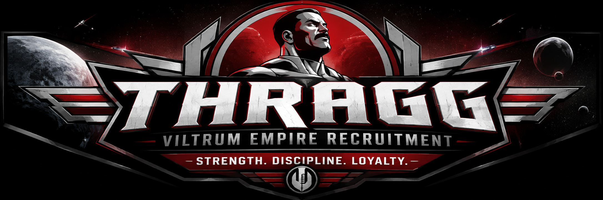

Join the Viltrum Empire
Ordinary lives are for ordinary people. Those with the strength to rise above them may have a place among the Viltrumites.

A Message From Grand Regent Thragg
Every recruit must understand what is expected before joining the Viltrum Empire.
A Viltrumite's Answer
Surrender is not the Viltrumite way. Listen to Grand Regent Thragg demonstrate the resolve expected from every soldier of the Empire.
Witness Viltrumite Strength
Before joining the Empire, witness the power and determination expected from those who call themselves Viltrumites.
Are You Strong Enough?
The Viltrum Empire does not need everyone. It needs the strongest.
If you have the strength, discipline, and loyalty to serve something greater than yourself, your recruitment begins now.
Reflection Questions
How does using alt text improve accessibility?
Alt text describes an image for people who may not be able to see it. A screen reader can read the description so the person still knows what the image is showing.
Why should you use multiple source elements for video and audio?
Different browsers may support different types of media files. Having more than one source gives the browser another option if it cannot play the first one.
What are the advantages of embedding a YouTube video instead of hosting it directly?
YouTube stores and plays the video for you, so you do not have to keep a large video file inside your project. It also saves storage space and makes the webpage easier to manage.